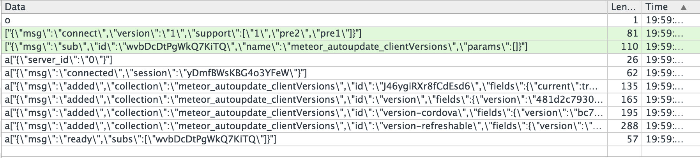

Author: alleneubank.com / @alleneubank
I have been doing web development for the past 5 years.
I have made a lot of interactive websites
(I write a lot of JavaScript)
Mobile is taking over
Meteor is an ultra-simple environment for building modern websites. What once took weeks, even with the best tools, now takes hours with Meteor.
Meteor doesn't send HTML over the network. The server sends data and lets the client render it.

Meteor lets you write both the client and the server parts of your application in JavaScript.
You can use the same methods to access your database from the client or the server.
On the client, Meteor prefetches data and simulates models to make it look like server method calls return instantly.
In Meteor, realtime is the default. All layers, from database to template, update themselves automatically when necessary.
Meteor is open source and integrates with existing open source tools and frameworks.
The best way to make something seem simple is to have it actually be simple. Meteor's main functionality has clean, classically beautiful APIs.